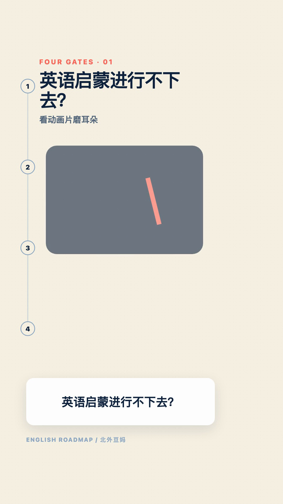
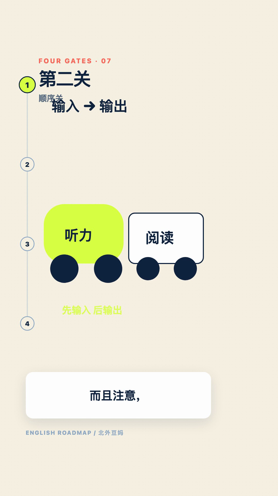
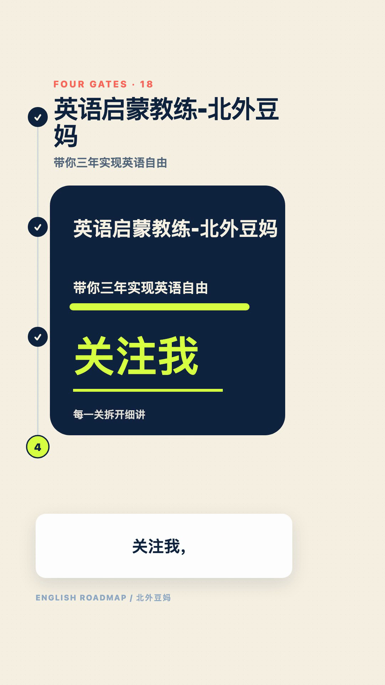

TextVideoGen 本地视频工作区
在 OpenCode 中运行的可复现本地视频制作工作区。把文稿、本地配音、分镜与素材按阶段落盘留档，用无头浏览器逐帧渲染 HTML/SVG 动画，再交给 FFmpeg 合成成片；后续返修文稿或单页视觉时，只需重算受影响的场景。
十三阶段生产流水线
全流程拆分为 13 个有序阶段，由 OpenCode 中的 Agent 与 Skills 协作完成，默认由 GPT 负责创意、导演方案与返修，DeepSeek 负责素材梳理与初检。每一阶段均由 JSON Schema 与运行日志登记产物，修改文稿或单个镜头时即可据此精确重做相关场景。
从 HTML Motion 到最终视频
浏览器逐帧渲染与 FFmpeg 媒体管线分工协作，既保留前端排版与矢量动效的精细度，又严格锁定视频时序；共享渲染器默认按 30 fps 输出，需要高速平滑动效时可切换为 60 fps。
历史样例输出
早期示例「英语启蒙四关通关总纲」采用 1080 × 1920 竖屏规格、30 fps，共 18 个场景。该示例生成产物已在打包整理时清理并回退至 script 阶段，下面保留归档成片帧与 QA 核验记录。



上手与常用指令
工作区入口统一收口于 bin/ 目录，环境初始化、建项目、过程日志、校验与打包均设有独立脚本。
准备与自检
./bin/setup 会将运行时、依赖、浏览器与本地模型集中装入隔离目录 .videoenv；日常确认环境健康度可随时执行无副作用的 ./bin/check-environment，不做额外推理。
新建与协作制作
先生成带阶段目录与 Schema 的工程骨架，再进入 OpenCode 启动视频 Agent 驱动整个分镜、配音与渲染周期。
记录与质量门禁
阶段事件与返修结论通过 ./bin/video-log 落盘，类型与隔离环境一致性则交由 ./bin/pnpm-video check 统一巡检。
# 1. 安装运行时与隔离环境（含 Playwright / 模型） ./bin/setup ./bin/check-environment # 2. 建立新项目并进入 Agent 制作流程 ./bin/new-project my-video "标题" ./bin/opencode-video # 3. 记录阶段事件与巡检环境/类型校验 ./bin/video-log ./bin/pnpm-video check